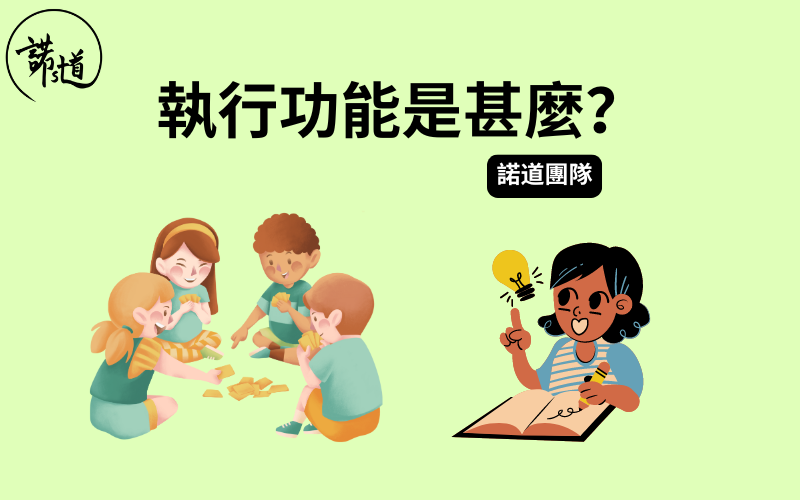

執行功能是甚麼?
撰文：諾道團隊
已更新：01-11-2024

執行功能是甚麼？
執行功能，英文叫Excecutive Function，是指完成⽬標時所應用的認知功能，簡單來說即是執行的能力。
⼤腦就像一個交通指揮員，在同一時間處理四面八方的資訊，再去選擇、過濾、分析、思考，從⽽作出相應的判斷或行為。因此，執行功能較弱的孩子在認知、學習、社交等都會面對很⼤挑戰。
這篇文章為⼤家介紹四種基本的執行功能：反應抑制、持久專注力、認知靈活性、工作記憶。
反應抑制
反應抑制，英文叫Response Inhibition，意指一個人在完成⽬標的過程中能考慮後果及情況再作行動。這種能力包括控制自⼰、忍住衝動，不去做一些與⽬標不相關或相⽭盾的行為。
反應抑制能力弱的常見例子：
• 經常沒有考慮後果便衝動行事
• 未有聽完指示便行動
• 經常打斷別人說話 / 不待問題完成便搶着說出答案
• 沒有耐性去輪候
• 難以遵從活動/遊戲規則
• 容易發脾氣
持久專注力
持久專注力，英文叫Sustained attention，是指在一段持續時間中，專注於完成工作或任務的能力。能持久專注的人即使在完成⽬標的過程中受到⼲擾，又或是在疲累或乏味的情況下仍能夠保持專注力，以完成工作為⽬標。反之，缺乏持久專注力的人容易被無關重要的事物⼲擾⽽分心，難以貫徹地執行任務。
持久專注力弱的常見例子：
• 注意力不集中和短暫
• 容易受外界⼲擾⽽分心
• 做事⽋缺條理
• 對細節不留心
• 常有疏忽
認知靈活性
認知靈活性，英文叫Cognitive Flexibility，是指當事情出現困難或新訊息時，有能力彈性地修改計畫，亦能將過往經驗靈活運用。具備這個應變能力的孩子能在有需要的時候改變注意點和接受改變，靈活思考以想到不同方法解決問題。
認知靈活性弱的常見例子：
• 較多固執行為
• 不善於尋求協助或嘗試運用不同的方法解決問題
• 較難適應突如其來的變化
工作記憶
工作記憶，英文叫Working Memory，是指能在短時間內有效地存取多於一項重要資訊，並用相關資訊執行不同任務。 工作記憶亦讓一個人能適當分配專注力，即一心幾用。工作記憶容量不足的孩子在生活和學習的各方面都會遭遇挑戰。
工作記憶能力弱的常見例子：
• 經常在課堂中「遊魂」/難以專注
• 經常忘記一連串的指令
• 需要較長時間思考
總結
患有專注力不足/過度活躍症(Attention Deficit/Hyperactivity Disorder，簡稱ADHD)和自閉症譜系障礙(Autistic Spectrum Disorder，簡稱ASD)的孩子在執行功能上的發展比同齡人慢，導致他們在學習、社交和生活上都遇到較⼤的困難。
可幸的是，執行功能是可以通過後天訓練得到提升。只要提供適當⽀援，就能提升孩子的執行功能，幫助他們在學習和日常生活上達到更理想的表現。
把這篇文章分享給身邊跟你同樣關心孩子成長的朋友，讓我們一起和孩子健康快樂地成長。
如有任何問題或需要幫忙，歡迎你跟諾道團隊聯絡，我們樂意為你提供協助！